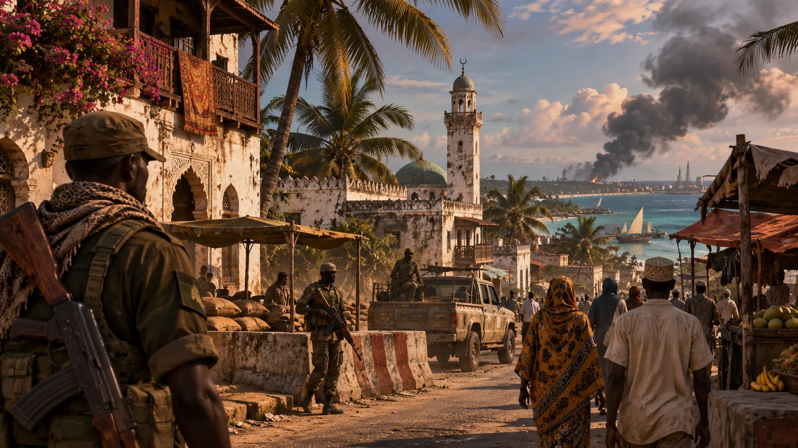

Постановочные художественные кадры конфликта и фауны.
ZANZIBAR / FIELD NOTES
Все представленные изображения созданы как художественные визуализации альтернативного острова. Они не являются фотографиями реальных вооружённых столкновений.

01 / ВИЗУАЛЬНЫЙ АРХИВПрибрежный городОстров, где жители привыкли к блокпостам.02 / ВИЗУАЛЬНЫЙ АРХИВГородской блокпостВоенные и гражданские в одной улице.03 / ВИЗУАЛЬНЫЙ АРХИВТропическая фаунаКрасный колобус на фоне побережья.04 / ВИЗУАЛЬНЫЙ АРХИВПортовые маршрутыТорговый и рыбацкий город.05 / ВИЗУАЛЬНЫЙ АРХИВВоенные колонныДорога, пересекающая зоны контроля.06 / ВИЗУАЛЬНЫЙ АРХИВУличный рынокПовседневность в тени конфликта.